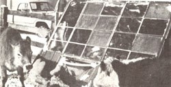

I, for one, am not overly fond of getting up early on bitter cold mornings to chop through a thick layer of ice on my cattle's water trough so that they can drink. Nor am I especially crazy about lugging buckets of hot water to the bovines. So last fall, with winter weather just around the proverbial corner, I found myself in a real quandary: I had neither the time nor the inclination to take on those tasks, yet I had no money to buy a commercial heated trough, either.
Somewhere in the course of my ruminations, however, the notion of constructing a solar-warmed waterer popped up . . . and even though I'd never built much of anything before, I decided to tackle the project. I'm glad I did, too, because-although the design is elementary (experienced handifolk would probably call it crude)-the danged thing works!
In fact, I put the trough together in less than two days, using mostly scrap and scavenged materials . . . plus a hammer, a saw, and a knack for "guesstimating" lengths and angles. (A tape measure? What's that?) Here's how I did it.
There's a freezeproof hydrant (that is, a lever-operated faucet with a shut-off valve below frost line, and with a riser pipe that drains dry when you turn off the device) on the north side of my feedlot . . . so I started my project by dragging a discarded bathtub next to that water source. To plug the container's drain, I cut-and put a small hole in the center of-a large round section from an old rubber inner tube, placed the stopper over the tub's opening, put a metal washer over that, slipped a long bolt through the middle, and fastened the assembly in position by putting a nut, and another washer, on the underside.
My next move was to position two railroad ties-parallel to the tub and about 3 feet from either side of it-to serve as sills to support the structure itself. Then I fashioned a heat-retaining "floor" by placing large foundation-type sandstone slabs between the ties and around the trough. (I didn't use mortar, but simply put the rocks down as close to one another as possible.)
With that accomplished, I set out to erect a rough A-shaped frame around the tub. First, I nailed two old 2 X 6's-one at each end-to one of the railroad "logs" ... so that they angled sharply upward and formed a triangle. Then I spiked the boards together at the apex. After building another such triangle on the opposite side of the tub, I simply connected the two by nailing several pine 2 X 4's across the back (that is, the north-facing side) of the sunspace-to-be.
On the open southern face, I installed an old iron-framed multipaned factory window that I'd "eyeballed" for width and height earlier. It fit nicely between the two triangles, reaching from just above the bathtub to the peak of the structure. About 10 inches of one end of the tub-a cuplike space big enough for a thirsty animal to drink from-protruded beneath the bottom of the window frame and into the feedlot.
Next, I framed in the areas just below the glass-on either side of and around the trough's front-and a small doorway at one end of the shed . . . stapled 3" foil-backed fiber glass insulation to the interior of the "hot box" (it was necessary, in several places, to add 2 X 4 crossmembers to support the material) . . . and painted the batting's shiny inward-facing surface black to increase heat absorption. After that, I built and hung the door, and covered the shanty's exterior (except for the window, of course) with tin roofing.
To keep the tub full, I bought and installed a standard livestock-tank float valve. (Such devices-which connect to a faucet with a short length of garden hose-cost between $7 and $15, and are available from Sears and other stores that carry agricultural hardware.) Then I covered the top of the sheltered portion of the trough with plastic window sheeting and "glued" the polyethylene in place with latex caulking. Finally, I carved a polystyrene foam panel that fit across the width of the tub, just in side the window, to close the remaining open space between the glass and the water's surface.
The finished waterer worked handily throughout its first winter. Even on the coldest mornings-when the contents of my unheated troughs were frozen solid-the "sun-powered" water supply was never covered by more than a very thin crust of ice . . . which usually melted by 10:00 a.m.
That's not to say, of course, that there's no room for improvement in my design . . . there most certainly is. For one thing, cows don't stand politely in line for water . . . they crowd around and compete for a drink, and occasionally one of the larger steers will bump into a glass pane and crack it. (If my hydrant had been located on the south side of the feedlot, I could've positioned the sungrabbing window on the rear of the structure, away from the trough's "cup", and avoided this problem.) To prevent that sort of damage, I may eventually want to run some protective 1/4" or 1/2" steel rods across the front of the lower tiers of glass.
In addition, I've discovered that the fiberglass batting I installed has lost much of its heat-retaining ability-by absorbing moisture from the shed's humid interior-and I've therefore decided to replace it with rigid-board insulation as soon as I get a chance.
Generally speaking, however, I'm pleased with my invention's performance. And I've found that-besides relieving me of the usual tiresome chores involved in providing winter water for my cattle-the solar trough's shelter makes a fine toolshed . . . a terrific hothouse for starting plants . . . and a warm, windproof haven from which to observe my stock.
Maybe most important of all, though, the building stands as an example of what I-or you, or anyone-can do with a little imagination and resourcefulness. I've learned that "solar" doesn't necessarily mean "high tech". Instead, it's often just a matter of making good use of natural gifts . . . such as the sun and your own brain power!
|
 By Rhett Rinne |
|
|